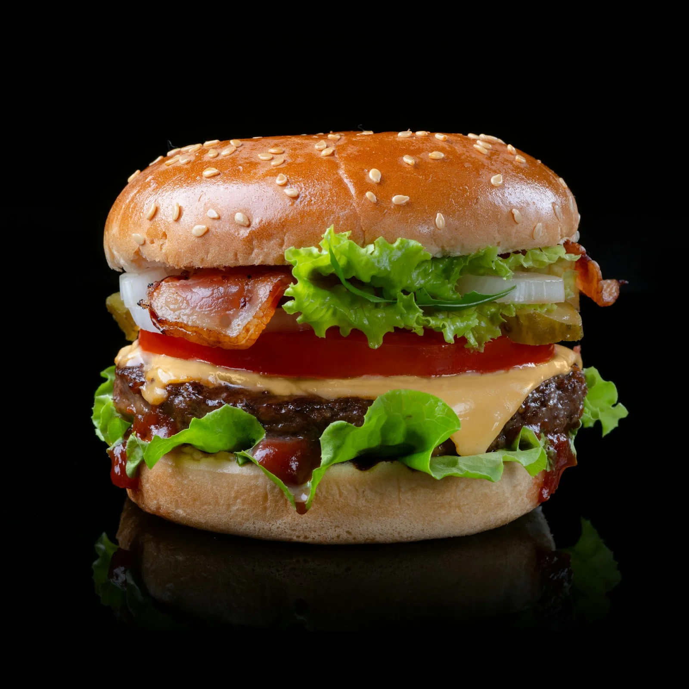
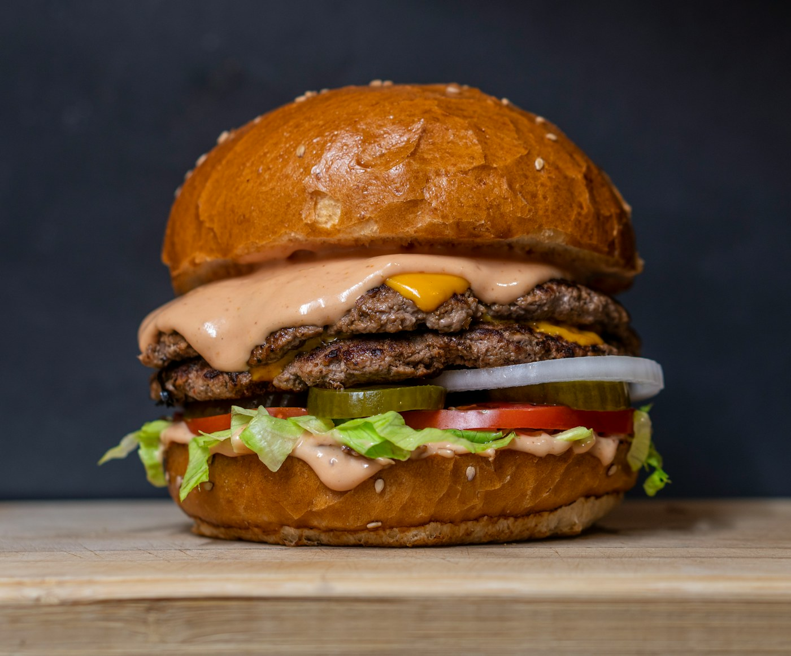

0102
БУРГЕРНАЯСАНКТ-ПЕТЕРБУРГ
01 — НАЧАЛОБургерный
Бургерный
маршрут —
сюда.
Телецбург — бургерная на Народной, 5. Заходи за бургером, хот-догом и своим городским перекусом.
ОТКРЫТЫ КАЖДЫЙ ДЕНЬ11:00 — 23:00
СПб11–23
СОЧНО. ЧЕСТНО. ПО-ПИТЕРСКИ.НАРОДНАЯ, 5 ↓

БЕЗ ЛИШНИХ СЛОВ · ТЕЛЕЦБУРГ
Не проезжай
мимо голода.
Загляни к нам на Народную. На исходном сайте указаны ежедневный график 11:00–23:00 и оценка 4,9 на основе 35 оценок.
За новостями — во ВКонтактеПАРКУЙСЯ ГОЛОДНЫМ · УЕЗЖАЙ СЫТЫМ
Вот где
нас найти.
АДРЕС 01Санкт-Петербург,
Народная улица, 5↗ ТЕЛЕФОН 02+7 (981) 785‑70‑45↗
Народная улица, 5↗ ТЕЛЕФОН 02+7 (981) 785‑70‑45↗
КАЖДЫЙ ДЕНЬ 0311:00 — 23:00✳
ОТКРЫТЬ ВКОНТАКТЕvk↗